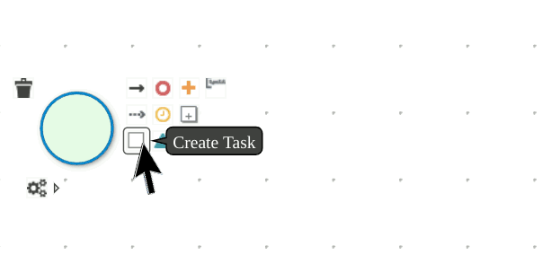

Build a Process Service
This lab introduces you to how you can get started with process projects that are based on Kogito and Quarkus, how to deploy and validate it.
-
Create a new quarkus-based process microservice
-
Leverage Kogito tooling in VSCode to design a simple process
-
Run the process in the development environment
Creating a new process project based on Kogito and Quarkus
In order to create a new process project based on Quarkus, we can use a Maven archetype to generate the Quarkus based project with the required dependencies for our decision application.
| At the time of writing Kogito Process is still not released in the product, so we are going to explore the latest community version |
Navigate to a folder of your preference, and run the following command. Maven will create a new project with the name process-lab01.
mvn archetype:generate \
-DartifactId=process-lab01 \
-DgroupId=org.acme -Dversion=1.0-SNAPSHOT \
-DarchetypeGroupId=org.kie.kogito \
-DarchetypeArtifactId=kogito-quarkus-archetype \
-DarchetypeVersion=1.10.0.FinalDesign the Order Approval process
-
Create
order-approval.bpmninsrc/main/resources: -
Design the process:
-
Add a Start Event
-
Next to the Start Event Click the box icon to add a task
 -
Name the task
Approve -
While the task is selected, open the Properties pane, update Task Name with
Approve
-
Below the Task from the gear icon select the user shape

-
Complete the process design adding the End Event

-
Run the process
Kogito generates a set of REST endpoints to interact with the process model at runtime. You can explore all the endpoints opening the Swagger UI.
In this section, we propose the REST Client tool for the following reasons:
-
Often you need the outcome of a service to trigger the following service, a really convenient feature of the REST Client is the variable initialization from the response and this avoid you the burden of coping and pasting those values
-
The
httpfile can be stored along with your project and can be easily reused later. -
It’s really fast to repeat the test scenario, because you will have all the REST calls in the correct order.
-
The same file can be reused with the service running in a different environment just changing the
HOSTvariable.
The following steps guide you to start a local Kogito runtime and probe the process model through the basic operations: start a new process instance, read the task list, complete the task and consequently complete the process instance.
-
Start the application in dev mode:
$ mvn quarkus:dev -
Create the file
order-approval.httpinsrc/test/http/folder -
Add the new process REST request:
@HOST=localhost:8080 ### # @name order_approval POST http://{{HOST}}/order_approval Accept: application/json Content-Type: application/json {} @piid={{order_approval.response.body.id}} -
Start a new process instance clicking Send Request link above
POST, the response body should resemble the following:{ "id": "333ed660-eda6-444b-8d75-6b411c18486d" }Rest Client parses the response and assign the process instance id to the piidvariable -
Get the task list and pick the first task id
### # @name order_approval_tasks GET http://{{HOST}}/order_approval/{{piid}}/tasks Accept: application/json Content-Type: application/json @taskid={{order_approval_tasks.response.body.0.id}} @task_name={{order_approval_tasks.response.body.0.name}} -
Claim the task
### # @name task_claim POST http://{{HOST}}/order_approval/{{piid}}/{{task_name}}/{{taskid}}?phase=claim Accept: application/json Content-Type: application/json {} -
Complete the task
### # @name task_complete POST http://{{HOST}}/order_approval/{{piid}}/{{task_name}}/{{taskid}}?phase=complete Accept: application/json Content-Type: application/json {}